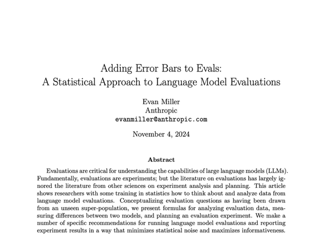

Part 1 of Optimizing in the Dark:
Organizational Blindness in AI Evaluations
Iterating towards a random target
"Any measurement, without knowledge of the uncertainty, is meaningless."
— Walter Lewin, MIT
Walter Lewin, the MIT physicist, in his first lecture of the course in basic Physics, tells his students: "Any measurement, without knowledge of the uncertainty, is meaningless." Not "less precise." Not "directionally useful." Meaningless.
Then he adds: "I want you to hear this at 3am tonight when you wake up."
And he was talking to people who live in the science of measurement. We are not in that world. In enterprise AI we evaluate and report "at scale" across many use cases and teams, with vastly diverse audiences ranging from engineers to scientists to executives. It is the duty of the presenter to make sure that they convey information in a manner that enables the listeners to take the right action.
I posit that while the number in itself may be meaningless, the act of reporting without knowledge and indication of its uncertainty makes it misleading.
"Any report that does not state the uncertainty of a measure is misleading."
— Just me
The problem is not that teams are careless or statistically naïve; it is that most evaluation pipelines and reporting conventions systematically hide uncertainty and reward apparent progress.
A common tendency in organizations is to wash uncertainty away based on the idea that "we are engineers, we are so cool because we approximate, and iterate. Uncertainty is for theorists. A measure may not be perfect, we know, but it's a hint, and we will improve over time. We crawl, walk, run." How many times have you heard this argument? Or how often do you hear that "yeah, it would be great to discuss uncertainty but executives won't understand, they need a simple number"?
These are scarily naive and dangerous arguments. Having a sense for how biased and noisy our measures can be is central to the notion of "engineering approximation". More specifically:
A measurement - and a report of a measurement - is harmful if it leads to making the wrong decision, or taking the wrong action on a system.
There are only two conditions under which ignoring and not reporting on uncertainty is not a problem:
If the second condition is true, then stop reading - and stop measuring. If metrics matter, then reporting without knowledge of uncertainty should be actively discouraged—a quality gate, not an afterthought. The industry here needs a "Jeff Bezos memo" moment, where leadership across companies send a clear message to their teams about making uncertainty and estimation of AI quality a first class citizen.
I started paying closer attention to this problem when Anthropic published a paper titled "Adding Error Bars to Evals." I thought: "It's about time people in this industry begin making this point."
But..... no, I was wrong. Social media were telling a different story. Famous AI researchers said on X: "Spectacular breakthrough in AI: Anthropic has discovered error bars!" The sarcasm was widespread. "What an unserious field", people said, that needs to be told to add error bars.
The mockery proved the paper's point. (the paper is on way more than "error bars" - and uncertainty is not synonymous with "error bars" - but it makes the point). If this was obvious and practiced, the paper wouldn't exist. The fact that a leading AI lab felt the need to write it—and the fact that the community's response was ridicule rather than embarrassment—tells us where we are.
Around the same time, I came across Kahneman, Sibony, and Sunstein's book "Noise: A Flaw in Human Judgment."
One of its central observations is that organizations systematically underestimate—and resist acknowledging—variability in judgment. We prefer consensus and harmony. We don't want to see the noise. The book focuses more on human judgment and assessment of human judgment, but the same applies to assessment of AI systems.
This book resonated well with my experience working with many companies and system integrators.

I've had this conversation a dozen times with engineers at AI companies. The response is remarkably consistent: "Yeah, we know there's variance. Big deal."
But the point the book is making is not that assessments are subject to errors and variability, but that such errors are large, and largely ignored by organizations. The book dwells on how orgs are especially insensitive to noise even more so than bias. For us, both are present, relevant, and need to be addressed.
So yes, there's noise and variance—and we don't know:
And - noise and variance are only part of the problem. In most of the customers I have worked with, measurement processes can be—and typically are—systematically biased: consistently producing results that are too optimistic or simply measuring the wrong thing.
What Kahneman helped me see is that this isn't just a skills gap. It's structural. Organizations have never had to develop the muscle for properly measuring the quality of AI systems and of machine judgment and have never had to deal with measurements that have so much uncertainty and this level of complexity. And to do so at scale.
The muscle doesn't exist—and it is unclear even if the right incentives to develop it are in place.
We are building highly consequential AI systems, making decisions based on evaluation numbers, and we are systematically both underestimating and ignoring the uncertainty in those numbers.
This begs the question: who bears responsibility for this widespread flaw? Is it the person presenting? The person who designed the reporting template? The team that delivered evaluation tools? The instructors that prepared the training material? or, The executive who doesn't ask? The culture that punishes uncertainty? Or, the natural unwillingness of organizations to accept the existence of variability within a structured process?
The question is hard also because the "problem" landscape has three distinct facets:
The visibility problem (epistemic): People are not aware the problem exists or how massive it is. It's not reported, not computed, not surfaced. The green 89% on the screen looks solid. Decision-makers can't account for what they don't know exists.
The culture problem (organizational): The organization doesn't ask. We don't reward quantifying uncertainty. We don't penalize ignoring it. The question "how confident are we?" isn't part of the discussion process. Uncertainty stays invisible because making it visible has no upside and many potential downsides (looking less confident, slowing things down, looking..... uncertain).
The action problem (methodological): Even when uncertainty is visible and the culture asks about it, people don't know what to do. How do you decide when the range is 77–95%? How do you reduce variance when you don't know which source dominates? The frameworks and practices are neither widely known nor well-established in modern AI.
Let's understand the cost of inaction—and then what to do about it.
(See Glossary and Notation for key terms and notation used throughout this series.)
Next: Part 2: The Cost of Ignorance — Why ignoring uncertainty is expensive